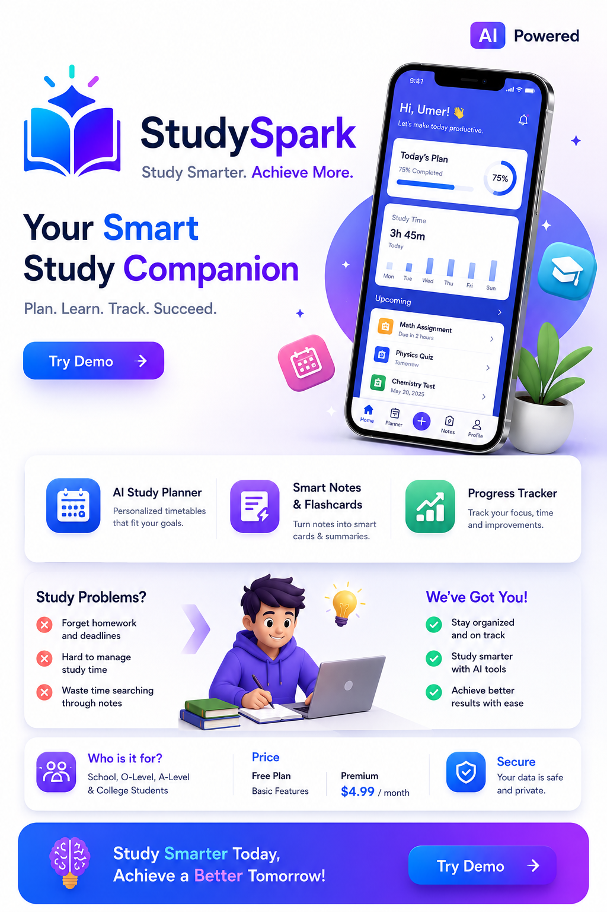

The Problem
Studying shouldn't feel this scattered
Most students aren't short on effort — they're short on a system that keeps up with them.
Forgotten tasks
Assignments and deadlines get lost across group chats, notebooks, and sticky notes.
Disorganized notes
Notes end up scattered across apps and papers, making revision harder than it needs to be.
Lost focus
Without a clear plan, study sessions drift and momentum disappears before real progress is made.
Features
Everything your study routine was missing
StudySpark brings planning, memory, and momentum into one place.
AI Study Planner
Get a personalized study schedule that adapts to your workload, deadlines, and energy levels.
Smart Flashcards
Turn your notes into flashcards automatically, then review them with spaced repetition that sticks.
Homework Reminders
Never miss a deadline again with smart reminders that nudge you before it's too late, not after.

At a glance
One app, built around how you actually study
A quick look at what's inside StudySpark.
Who it's for
Built for students at every level
StudySpark is designed for O-Level, A-Level, high school, college, and university students who want to stay organized, manage their study time, and improve their academic performance with AI-powered learning tools.
- O-Level
- A-Level
- High School
- College
- University
Ready to study smarter?
Join early access and be the first to try StudySpark when it launches.
Pre-order StudySpark